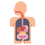

Mineral Grimoire
 Chrysocolla
Chrysocolla

Digestive SystemHeart ChakraLungsChrysocolla is a copper phyllosilicate mineral with a Mohs hardness of 2.5 to 3.5, named in 315 BCE by the Greek philosopher and botanist Theophrastus. Its name combines the Greek words for gold (chrysos) and glue (kolla), a reference to its earliest recorded use as a flux in Roman gold soldering. It forms in the oxidation zones of copper ore deposits and is closely related to other copper-bearing minerals including malachite, azurite, and turquoise.
Chrysocolla's Journey to You
Chrysocolla carries a long history of ceremonial use across cultures. Amulets of chrysocolla have been recovered from the arms of mummified children in early dynastic Egypt, placed there to shield their souls during the transition into the afterlife. Centuries later, Cleopatra reportedly presented chrysocolla as diplomatic gifts to foreign dignitaries, recognizing its association with open dialogue and skillful negotiation. These historical uses mirror its contemporary role as a stone of compassionate communication and connection, both with other people and with the living intelligence of the Earth itself. It holds the distinction of being the national stone of Israel.
Crystal Healing with Chrysocolla
Although chrysocolla is most recognized as a Throat Chakra stone, it also brings vitality and calm to the Root, Sacral, and Heart Chakras. At the Root and Sacral Chakras, it opens a channel to the Divine Feminine and the energy of sacred sexuality, linking the practitioner to the matriarchal lineages of their ancestry, including the priestesses, queens, oracles, and goddesses whose power now lives within them. Placed on the Heart Chakra, it soothes heartache and restores the inner strength required to open oneself to love again. At the Throat Chakra, it supports the clear and courageous expression of personal truth while cultivating the diplomatic awareness to know when silence serves better than speech.
For the Beginner
- Draws out deep-seated wisdom and strengthens your connection to inner knowing.
- Builds the courage to speak authentically and from the heart.
- Amplifies the effectiveness of sound healing practices, including drumming, solfeggio frequencies, singing bowls, and spoken affirmations.
For the Advanced Practitioner
Chrysocolla extends communication beyond the human realm, deepening the practitioner's attunement to the Earth and to the current of the Divine Feminine. It is particularly associated with Sophia, the Greek embodiment of wisdom, and supports the recovery of ancestral gifts passed through the matrilineal line. It carries an awareness of a time before the suppression of feminine authority and invites the practitioner to reclaim that sovereignty within themselves. In doing so, it works as a stone of integration, balancing the directive qualities of leadership and authority with the receptive, relational intelligence of the feminine.
Chrysocolla's Magickal Message for You
"If you need the courage to communicate that which you know to be true, I am your ally. I am here to connect you with the timeless intelligence and strength of the regal goddesses who came before. All of their sovereignty resides within you now."
Partners Well With
Ajoite, Aquamarine, Azurite, Lapis Lazuli, Larimar, Malachite, Shattuckite
Did You Know?
Chrysocolla is the national stone of Israel.